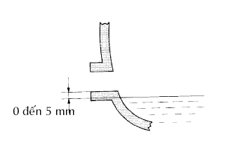

DẦU VI SAI > KIỂM TRA TRÊN XE |
| 1. KIỂM TRA DẦU VI SAI |
|  |
Dừng xe trên mặt phẳng
Tháo nút đổ dầu và gioăng.
Kiểm tra rằng mức dầu cách mép dưới của miệng nút đổ dầu từ 0 đến 5 mm (0 đến 0.20 in.).
| Nhiệt độ | Độ nhớt |
| Trên -18°C (0°F): | SAE 90 |
| Dưới -18°C (0°F) | SAE 80W hay 80W - 90 |
Kiểm tra rò rỉ dầu khi mức dầu là thấp.
Lắp nút đổ dầu vi sai bằng một gioăng mới.